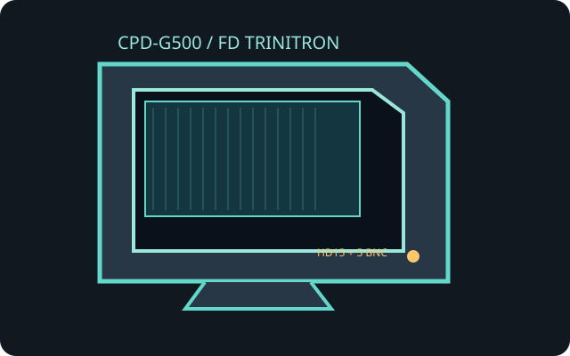

[ INDIVIDUAL COMPONENT // SONY ]
Sony CPD-G500 FD Trinitron
A 21-inch-class professional desktop monitor with a flat FD Trinitron aperture-grille tube and multiscan analog video.

IDENTIFICATION: CPD-G500 is the model designation; confirm the rear nameplate and regional mains rating before use. CRTs have no fixed pixel matrix, so resolution is an input timing, not a native panel raster.
Model specifications
| Exact model / tube | Sony CPD-G500; 21-inch nominal FD Trinitron CRT, approximately 19.8-inch viewable image, 4:3 aperture grille. |
|---|---|
| Pitch | 0.24 mm aperture-grille pitch; not LCD pixel pitch. |
| Resolution and timing | No fixed native resolution. Recommended desktop mode is 1600 × 1200 at 85 Hz; supported high-end timing reaches 2048 × 1536 at up to 75 Hz. Scan limits: 30–130 kHz horizontal, 48–170 Hz vertical. Check manual timing table and source. |
| Connectors | One HD15 (DE-15) analog RGB input and one five-BNC analog RGBHV input; input selection is monitor-side. No digital video input. |
| Power | 100–240 V AC, 50/60 Hz; approximately 145 W operating, with reduced DPMS standby use. Use the regional power cord and nameplate rating. |
| Compatibility | Requires analog RGB with a supported multiscan sync timing. HDMI/DisplayPort-only hosts need an active digital-to-analog VGA converter; a passive connector adapter cannot convert digital video. |
Compatibility and safety
Set a supported progressive timing before connecting; avoid unsupported scan rates and verify the selected input, sync type, geometry and cable pinout. The monitor is heavy and contains hazardous high-voltage circuitry even after unplugging. Do not open it; internal service is for a qualified CRT technician. Confirm the label voltage and inspect the mains lead before operation.
Documentation and sources
- Sony CPD-G500 Operating InstructionsModel manual with timing, connection and safety instructions.
- Sony CPD-G500 manual archiveDigitized operating-instruction reference for this exact model.